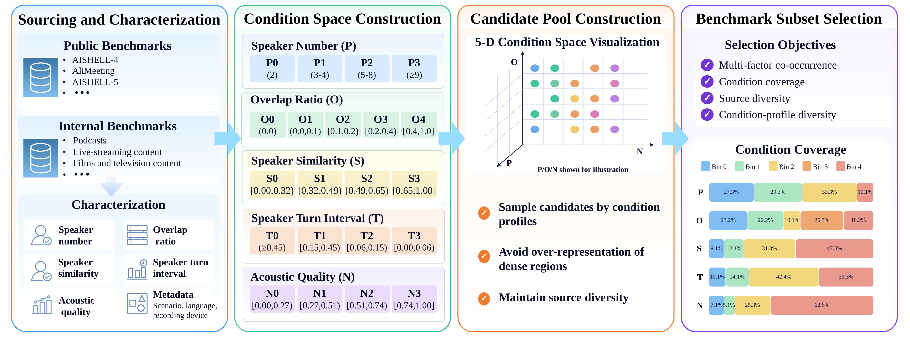

Language
Loading language composition...
Beyond aggregate scores: evaluate who spoke what and when across five multi-speaker conditions.
MS-Bench isolates condition-specific behavior instead of reducing each system to one number.
The five axes describe different interaction and acoustic properties. Higher tier numbers are not a universal difficulty scale.
Count-based distribution over complete recordings.

Seven systems from the paper. Lower is better for every error metric.
Loading system results...
DER: diarization error with a 0.5-second collar. cpWER: speaker-attributed transcription error under optimal speaker permutation. tcpWER: time-constrained cpWER with a 5-second collar. WER: speaker-agnostic lexical error.
Metrics use each system's scoreable inference units, so valid subsets may differ. Excluded units cannot be scored reliably. Soft-degradation units remain parseable and are retained.
Point estimates, direction, significance, controls, and limitations are shown together.
Loading diagnostic findings...
Eight curated excerpts connect the five condition labels to time-aligned reference speech. Cases illustrate conditions, not model ranking.
Loading representative cases...
Select one tier per axis. Filters combine with AND; unavailable tiers show why they cannot be selected.
Loading curated matches...
Availability is stated per artifact so a preview is not mistaken for the complete benchmark release.
Loading release status...